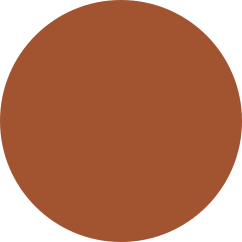

Organize e compartilhe todas suas experiências de leituras
iteralis

Conheça
Recursos do Literalis
Compartilhar leitura
Deixe o mundo saber sua opinião sobre sua leitura e veja o que seus amigos andam lendo
Anotações privadas
Não deseja compartilhar aquele detalhe importante? Sem problemas, você pode usar seu caderno para fazer anotações privadas
Visualize todos seus livros lidos
Crie categorias e organize sua prateleira como desejar. Você também pode escolher se seus livros serão públicos ou não
Temporizador de foco
Quando acionado, o temporizador congela sua tela para evitar distrações e assim você controla os dias em que se manteve focado na leitura
E muito mais!